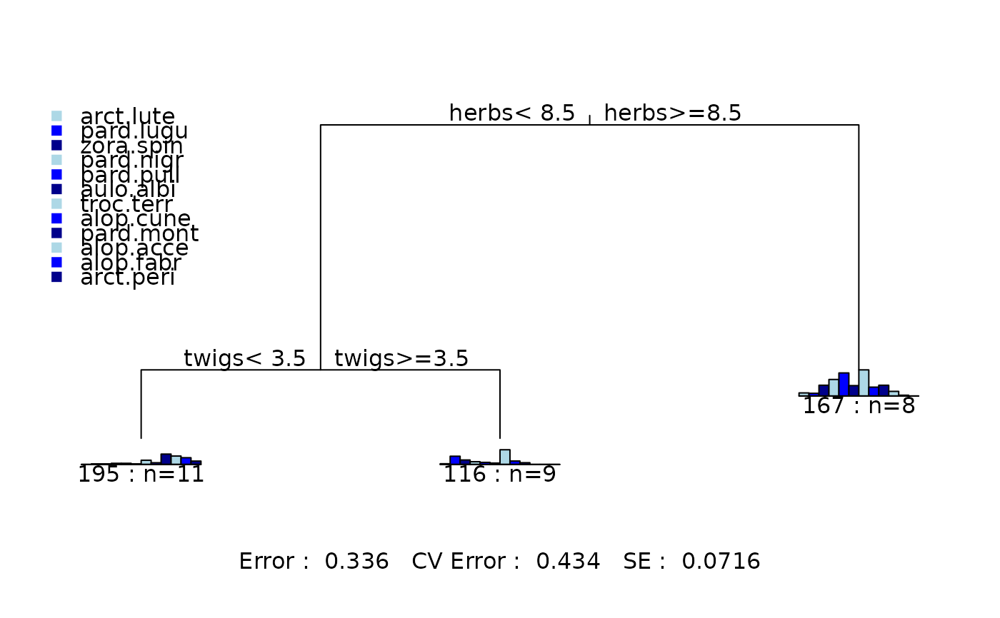
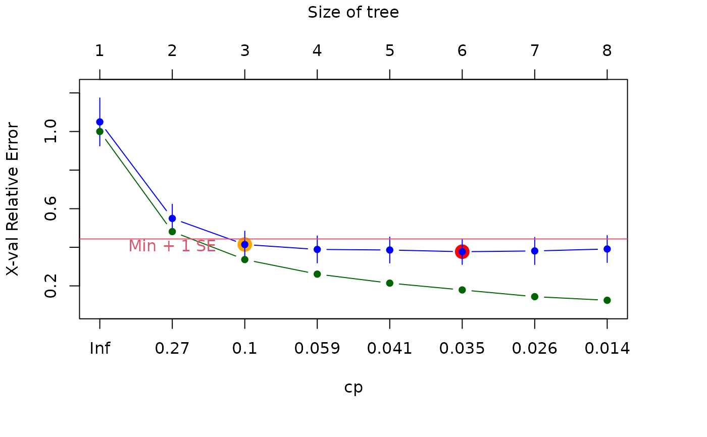
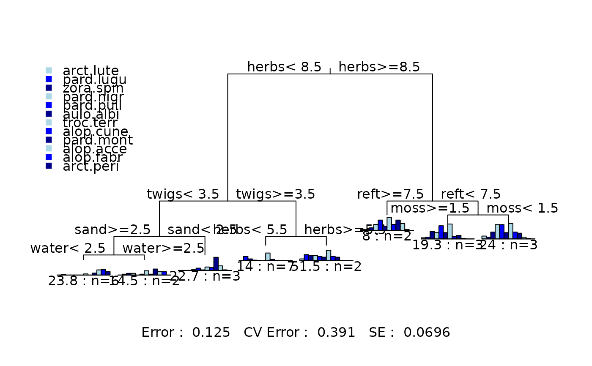
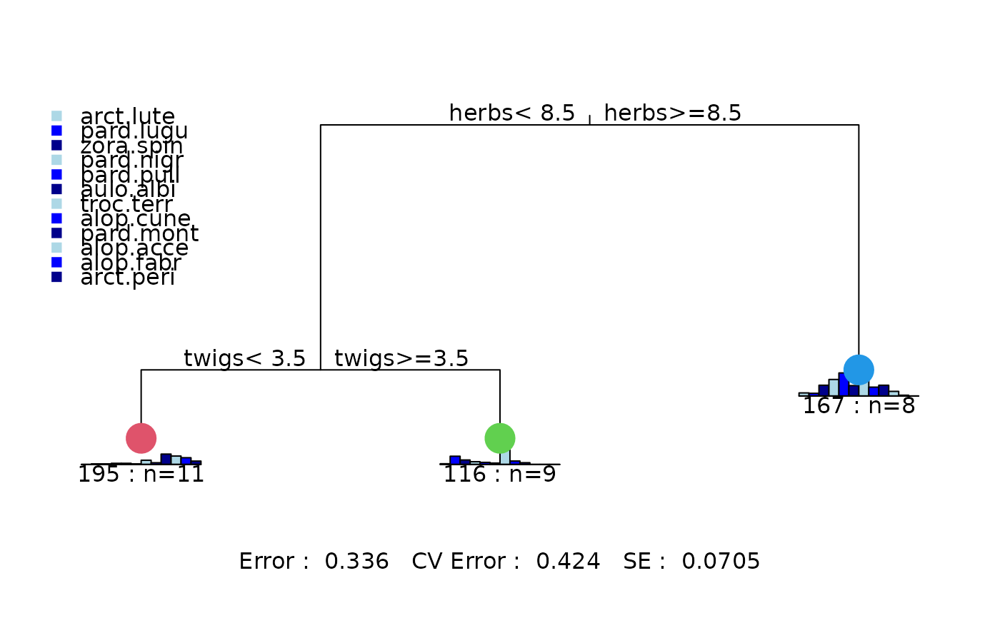
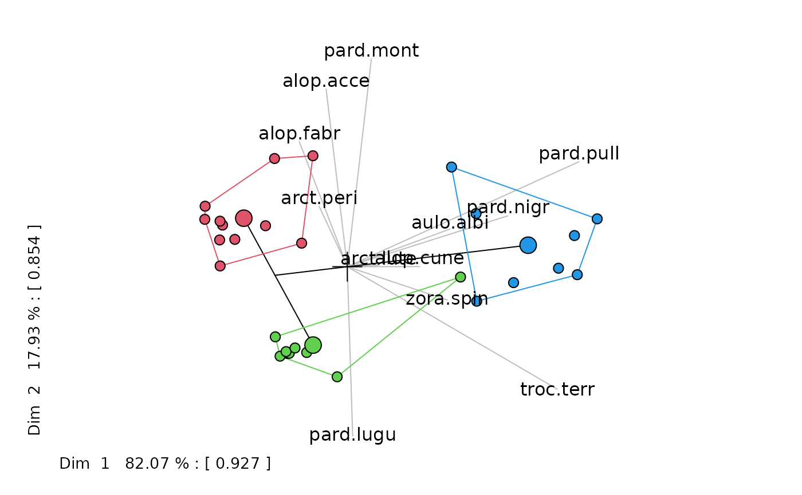
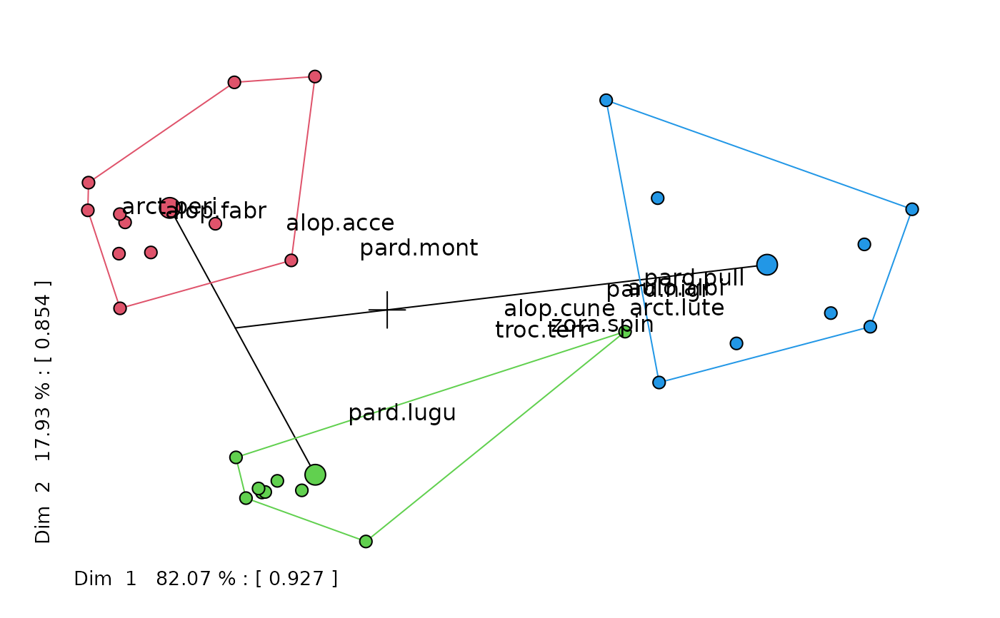

Recursive Partitioning and Regression Trees
mvpart.RdWrapper function for fitting and plotting rpart models
Usage
mvpart(form, data, minauto = TRUE, size, xv = c("1se", "min",
"pick", "none"), xval = 10, xvmult = 0, xvse = 1, snip = FALSE,
plot.add = TRUE, text.add = TRUE, digits = 3, margin = 0,
uniform = FALSE, which = 4, pretty = TRUE, use.n = TRUE,
all.leaves = FALSE, bars = TRUE, legend, bord = FALSE,
xadj = 1, yadj = 1, prn = FALSE, branch = 1, rsq = FALSE,
big.pts = FALSE, pca = FALSE, interact.pca = FALSE,
wgt.ave.pca = FALSE, keep.y = TRUE, ...)Arguments
- form
As for
rpartfunction. Arguments to rpart can be passed by ....- data
Optional data frame in which to interpret the variables named in the formula
- minauto
If
TRUEuses smart minsplit and minbucket based on N cases.- size
The size of tree to be generated.
- xv
Selection of tree by cross-validation:
"1se"- gives best tree within one SE of the overall best,"min"- the best tree,"pick"- pick the tree size interactively,"none"- no cross-validation.- xval
Number of cross-validations or vector defining cross-validation groups.
- xvmult
Number of multiple cross-validations.
- xvse
Multiplier for the number of SEs used for
xv = "1se".- plot.add
Plot the tree and (optionally) add text.
- text.add
Add output of
text.rpartto tree.- snip
Interactively prune the tree.
- digits
Number of digits on labels.
- margin
Margin around plot, 0.1 gives an extra 10 percent space around the plot.
- uniform
Uniform lengths to the branches of the tree.
- which
Which split labels and where to plot them, 1=centered, 2 = left, 3 = right and 4 = both.
- pretty
Pretty labels or full labels.
- use.n
Add number of cases at each node.
- all.leaves
Annotate all nodes.
- bars
If
TRUEadds barplots to nodes.- legend
If
TRUEadds legend for mrt and classification trees.- bord
Border (box) around the barplots.
- xadj, yadj
Adjust the size of the individual barplots (default = 1).
- prn
If
TRUEprints tree details.- branch
Controls spread of branches: 1=vertical lines, 0=maximum slope.
- rsq
If
TRUEgives "rsq" plot.- big.pts
Plot colored points at leaves – useful to link to PCA plot.
- pca
If
TRUEplots PCA of group means and add species and site information.- interact.pca
If
TRUEruns interactive PCA. Seerpart.pca.- wgt.ave.pca
If
TRUEplot weighted averages acorss sites for species.- keep.y
If
TRUEy values are returned.- ...
... other arguments passed to
rpart.
Examples
data(spider)
mvpart(data.matrix(spider[,1:12])~herbs+reft+moss+sand+twigs+
water,spider) # defaults

mvpart(data.matrix(spider[,1:12])~herbs+reft+moss+sand+twigs+
water,spider,xv="p") # pick the tree size


# pick cv size and do PCA
fit <- mvpart(data.matrix(spider[,1:12])~herbs+reft+moss+sand+
twigs+water,spider,xv="1se",pca=TRUE)


rpart.pca(fit,interact=TRUE,wgt.ave=TRUE)

# interactive PCA plot of saved multivariate tree